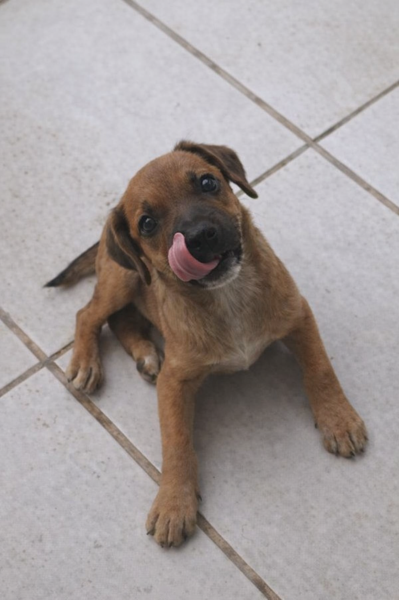
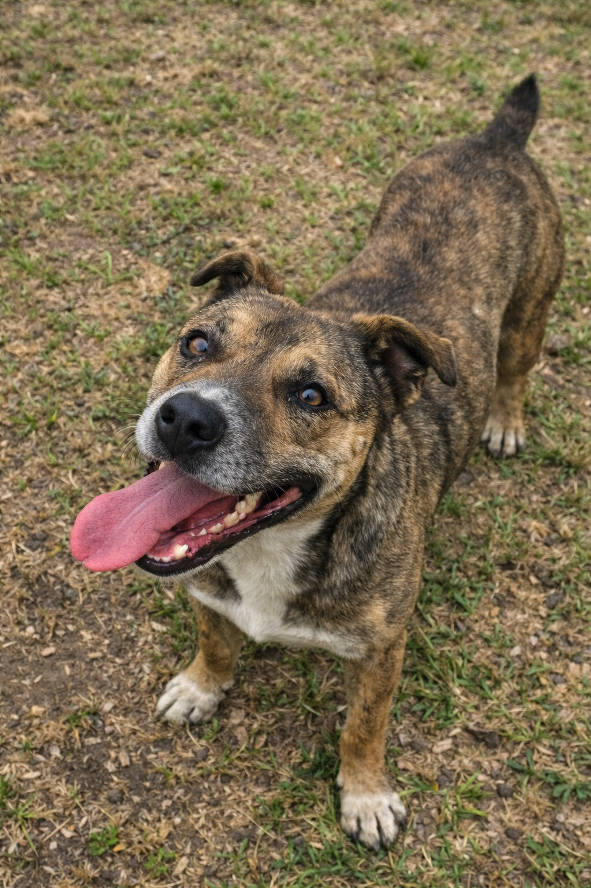

<!DOCTYPE html>
<html lang="pt-BR">
<head>
  <meta charset="UTF-8" />
  <meta name="viewport" content="width=device-width, initial-scale=1.0" />
  <title>Conectando Animais Abandonados</title>
  <link href="https://fonts.googleapis.com/css2?family=Poppins:wght@300;400;600&display=swap" rel="stylesheet">
  <style>
    * { margin: 0; padding: 0; box-sizing: border-box; font-family: 'Poppins', sans-serif; }
    body { background: #f4f6f8; color: #333; }

    header {
      background: #1e88e5;
      color: #fff;
      padding: 60px 20px;
      text-align: center;
    }

    header h1 { font-size: 2.5rem; margin-bottom: 10px; }
    header p { font-size: 1.1rem; max-width: 700px; margin: auto; }

    section { padding: 60px 20px; max-width: 1200px; margin: auto; }

    .steps {
      display: grid;
      grid-template-columns: repeat(auto-fit, minmax(220px, 1fr));
      gap: 20px;
      margin-top: 30px;
    }

    .card {
      background: #fff;
      padding: 25px;
      border-radius: 10px;
      box-shadow: 0 4px 10px rgba(0,0,0,0.08);
      text-align: center;
    }

    .card h3 { margin-bottom: 10px; color: #1e88e5; }

    .gallery {
      display: grid;
      grid-template-columns: repeat(auto-fit, minmax(280px, 1fr));
      gap: 25px;
      margin-top: 30px;
    }

    .dog-card {
      background: #fff;
      border-radius: 14px;
      overflow: hidden;
      box-shadow: 0 6px 14px rgba(0,0,0,0.1);
      transition: transform 0.2s ease;
    }

    .dog-card:hover {
      transform: translateY(-4px);
    }

    .dog-card img {
      width: 100%;
      height: 260px;
      object-fit: cover;
      object-position: center;
      background-color: #eee;
    }

    .dog-card .info { padding: 18px; }

    .dog-card strong { display: block; margin-bottom: 6px; }

    .dog-card button {
      margin-top: 12px;
      width: 100%;
      padding: 12px;
      background: #1e88e5;
      color: #fff;
      border: none;
      border-radius: 8px;
      cursor: pointer;
      font-size: 0.95rem;
    }

    .dog-card button:hover { background: #1565c0; }

    footer {
      background: #1e88e5;
      color: #fff;
      text-align: center;
      padding: 20px;
      margin-top: 40px;
    }
</head>
<body>

<header>
  <h1>Conectando Animais Abandonados</h1>
  <p>Ajude a mapear cães e gatos abandonados em Criciúma. Registre, compartilhe a localização e conecte pessoas dispostas a resgatar e adotar.</p>
</header>

<section>
  <h2>Como funciona</h2>
  <div class="steps">
    <div class="card"><h3>Identificação</h3><p>Moradores identificam animais abandonados nas ruas.</p></div>
    <div class="card"><h3>Registro</h3><p>Foto e localização são cadastradas no aplicativo.</p></div>
    <div class="card"><h3>Divulgação</h3><p>Os animais ficam visíveis para a comunidade.</p></div>
    <div class="card"><h3>Resgate</h3><p>Pessoas responsáveis entram em contato para ajudar.</p></div>
  </div>
</section>


<section>
  <h2>Animais que precisam de ajuda</h2>
<p style="margin-top:10px">📸 Para cadastrar um animal abandonado, envie a foto e a localização diretamente pelo WhatsApp.</p>
<a href="https://wa.me/5548996341797" target="_blank" style="display:inline-block;margin-top:15px;padding:12px 20px;background:#25d366;color:#fff;border-radius:6px;text-decoration:none;font-weight:600">Cadastrar animal pelo WhatsApp</a>
  <div class="gallery">

    <div class="dog-card">
      
      <div class="info">
        <strong>Localização:</strong> Bairro Argentina – Criciúma
        <strong>Condição:</strong> Novinha e assustada
        <a href="https://wa.me/5548996341797" target="_blank"><button>Quero ajudar</button></a>
      </div>
    </div>

    <div class="dog-card">
      
      <div class="info">
        <strong>Localização:</strong> Bairro Próspera – Criciúma
        <strong>Condição:</strong> Ferimento na pata
        <a href="https://wa.me/5548996341797" target="_blank"><button>Quero ajudar</button></a>
      </div>
    </div>

  </div>
</section>

<footer>
  <p>Projeto Extensionista – Conectando Animais Abandonados © 2026</p>
</footer>

</body>
</html>


